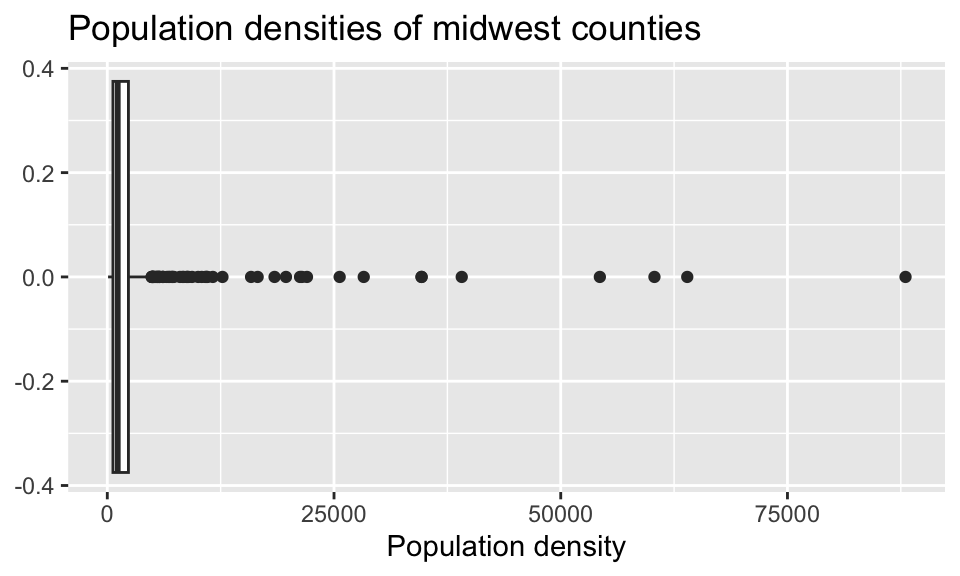
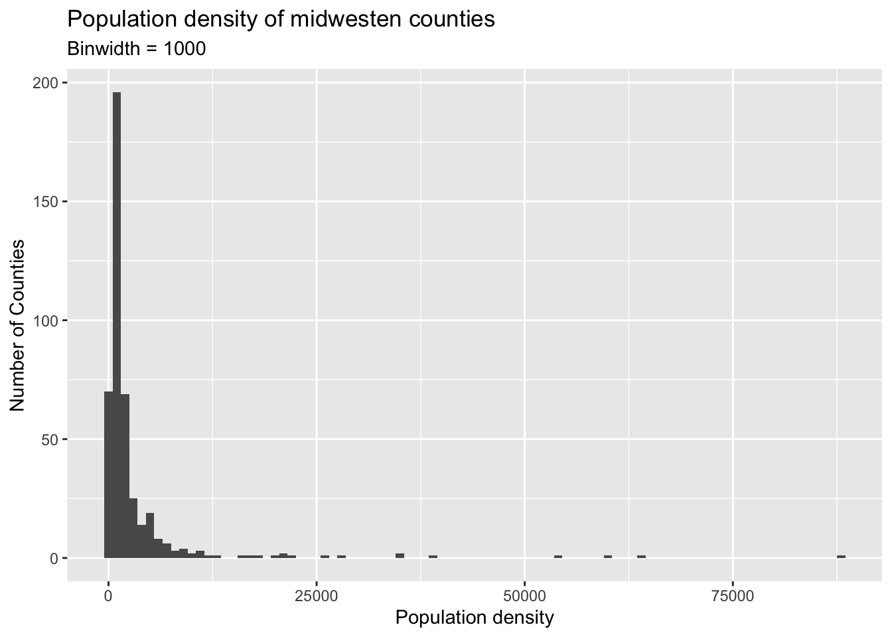
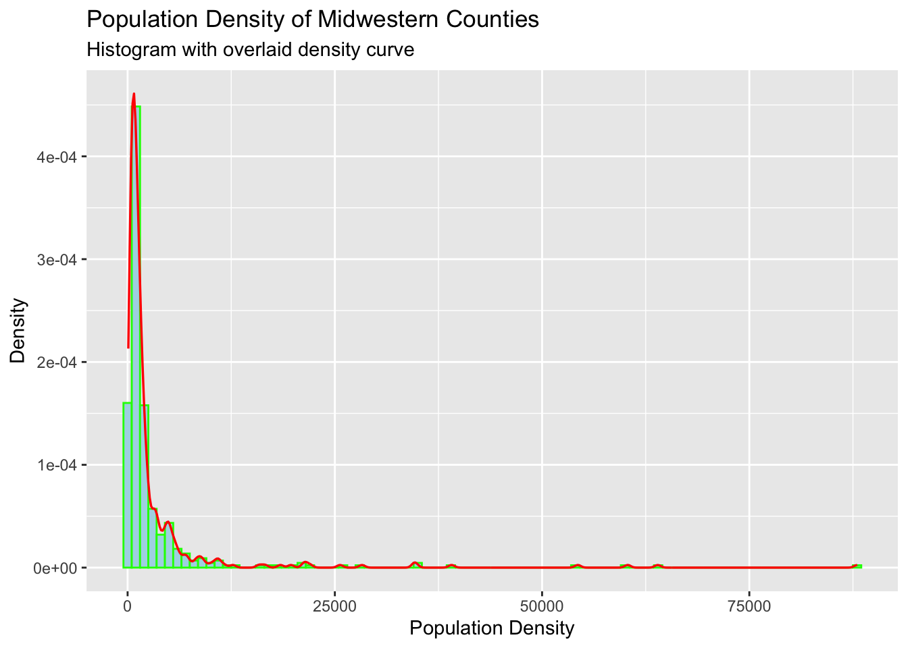
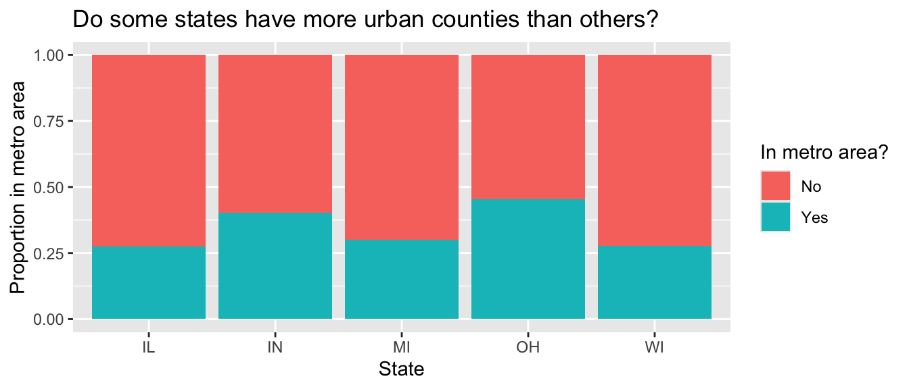
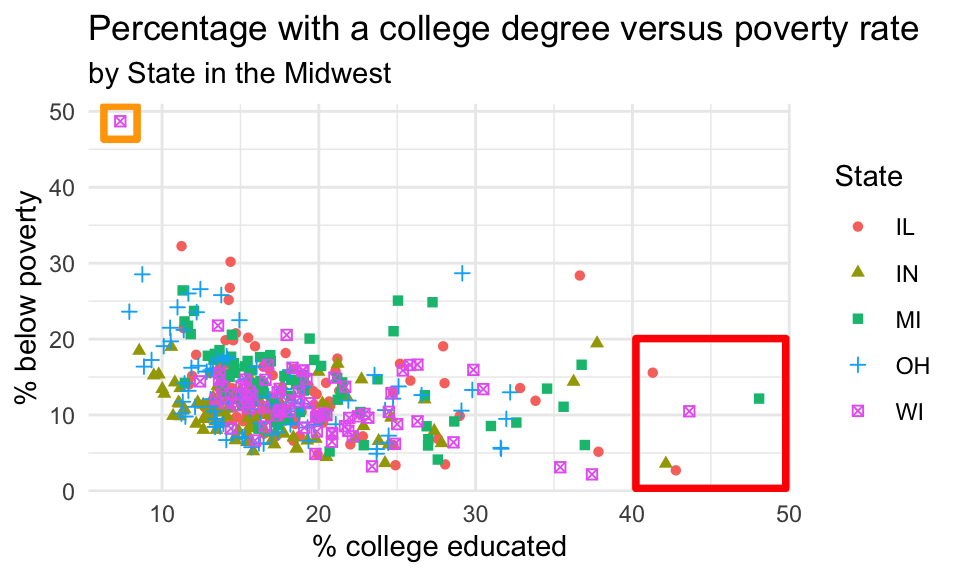
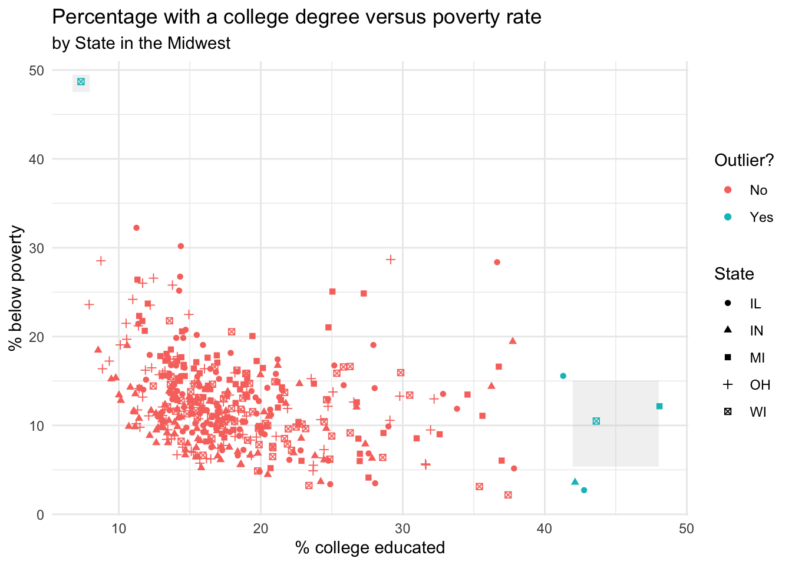

midwest |>
group_by(state) |>
summarize(count = n()) |>
arrange(desc(count)) # A tibble: 5 × 2
state count
<chr> <int>
1 IL 102
2 IN 92
3 OH 88
4 MI 83
5 WI 72due Tuesday, September 22, 2026
Daniel E. Martínez
In this assignment, we dive into using data wrangling to summarize datasets quantitatively and to format datasets so that they can be visualized.
Back to the Midwest… this time, wrangling.
In this part you will revisit and build on some of your findings from HW 2, where you explored the midwest data frame. Remember that the data frame is bundled with the ggplot2 package and is automatically loaded when you load the tidyverse package. As a refresher, the data contains demographic characteristics of counties in the Midwest region of the United States. You can read documentation for the data set, including variable definitions by typing ?midwest in the Console or searching for midwest in the Help pane.
The data in the midwest data frame are from the 2000 census, so the information you compute below is likely slightly different from the values today.
Calculate the number of counties in each state and display your results in descending order of number of counties. Which state has the highest number of counties, and how many? Which state has the lowest number, and how many?
Commands Without Chaining by_state <- group_by(midwest, state) count_by_state <- summarize(by_state, count = n()) count_by_state_sorted <- arrange(count_by_state, desc(count)) view(count_by_state_sorted)
With Chaining
# A tibble: 5 × 2
state count
<chr> <int>
1 IL 102
2 IN 92
3 OH 88
4 MI 83
5 WI 72ANSWER: Illinois has the the highest number of counties (102) and Wisconsin has the lowest (72)
Within a state, two counties can’t have the same name, but across states county names can be shared. A friend says “Look, there is a county called XYZ in EVERY state in this dataset!” In a single pipeline, discover all counties that could fill in the value of XYZ. Your output should be a data frame with two columns: county and the number of times they appear in the data.
You will want to use the filter() function in your answer, which requires a logical condition to describe what you want to filter for. For example filter(x > 2) means filter for values of x greater than 2, filter(y <= 3) means filter for values of y less than or equal to 3.
| operator | definition |
|---|---|
< |
less than |
<= |
less than or equal to |
> |
greater than |
>= |
greater than or equal to |
== |
exactly equal to |
!= |
not equal to |
x & y |
x AND y |
x | y |
x OR y |
is.na(x) |
test if x is NA |
!is.na(x) |
test if x is not NA |
x %in% y |
test if x is in y |
!(x %in% y) |
test if x is not in y |
!x |
not x |
The table above is a summary of logical operators and how to articulate them in R.
Consider the following box plot of population densities where you can see that some counties have extreme values.

Identify the counties described in each part:
filter() function.# A tibble: 9 × 5
county state popdensity poptotal area
<chr> <chr> <dbl> <int> <dbl>
1 COOK IL 88018. 5105067 0.058
2 MILWAUKEE WI 63952. 959275 0.015
3 WAYNE MI 60334. 2111687 0.035
4 CUYAHOGA OH 54313. 1412140 0.026
5 DU PAGE IL 39083. 781666 0.02
6 MARION IN 34659. 797159 0.023
7 HAMILTON OH 34649. 866228 0.025
8 FRANKLIN OH 28278. 961437 0.034
9 MACOMB MI 25621. 717400 0.028max() function.# A tibble: 1 × 5
county state popdensity poptotal area
<chr> <chr> <dbl> <int> <dbl>
1 COOK IL 88018. 5105067 0.058Answer using a single data wrangling pipeline for each part. Your response should be a data frame with five columns: county name, state name, population density, total population, and area, in order. If your response has multiple rows, the data frame should be arranged in descending order of population density.
Let’s say that you want to describe the distribution of population densities. The following is one acceptable description (in words) that touches on shape, center, and spread of this distribution. Create a plot that fits the description, and use data verbs to calculate the values that should go into the blanks. [You might want to look up the quantile() function by typing ?quantile into the Console.]
The distribution of population density of counties is unimodal and extremely right-skewed. A typical Midwestern county has population density of ____ people per unit area. The middle 50% of the counties have population densities between ___ to ___ people per unit area.
Think about which measures of center and spread are appropriate for skewed distributions. That is, there is a right answer for the choice of functions you use to calculate the center and spread.

Remember that a right-skewed or right-tailed distribution leans to the left and is said to have positive skew.
Another option no so pretty.
ggplot(midwest, aes(x = popdensity, y = after_stat(density))) +
geom_histogram(binwidth = 1000, fill = "lightblue", color = "green") +
geom_density(color = "red", linewidth = 0.6) +
labs(
x = "Population Density",
y = "Density",
title = "Population Density of Midwestern Counties",
subtitle = "Histogram with overlaid density curve"
)
0% 25% 50% 75% 100%
85.0500 622.4074 1156.2083 2330.0000 88018.3966 ANSWER: The distribution of population density of counties is unimodal and extremely right-skewed. A typical Midwestern county has population density of 1156 people per unit area. The middle 50% of the counties have population densities between 622 to 2330 people per unit area.
Recall the visualization from HW 2 that showed the proportion of urban counties in each state.

In a single data pipeline, calculate the proportion of counties in a metro area for each state (that is, the turquoise number from the plot above).
# A tibble: 5 × 4
state yes_count no_count ratio
<chr> <int> <int> <dbl>
1 OH 40 48 0.455
2 IN 37 55 0.402
3 MI 25 58 0.301
4 WI 20 52 0.278
5 IL 28 74 0.275Return to the following scatter plot of percentage below poverty vs. percentage of people with a college degree, where the color and shape of points are determined by state. Recall that you were asked to identify (by name) at least one county that is a clear outlier.

# A tibble: 1 × 4
county state percbelowpoverty percollege
<chr> <chr> <dbl> <dbl>
1 MENOMINEE WI 48.7 7.34# A tibble: 5 × 4
county state percbelowpoverty percollege
<chr> <chr> <dbl> <dbl>
1 CHAMPAIGN IL 15.6 41.3
2 DU PAGE IL 2.71 42.8
3 HAMILTON IN 3.59 42.1
4 WASHTENAW MI 12.2 48.1
5 DANE WI 10.5 43.6filter() statement, identify the observations marked in the red and orange square in the plot above. Your answer should again be a data frame with four variables: county, state, percentage below poverty, and percentage college educated.# A tibble: 6 × 4
county state percbelowpoverty percollege
<chr> <chr> <dbl> <dbl>
1 CHAMPAIGN IL 15.6 41.3
2 DU PAGE IL 2.71 42.8
3 HAMILTON IN 3.59 42.1
4 WASHTENAW MI 12.2 48.1
5 DANE WI 10.5 43.6
6 MENOMINEE WI 48.7 7.34midwest called potential_outlier. This variable should take on the value:Yes if the point is one the ones you identified in part (c), i.e., one of the points marked in the squares in the plot above.
No otherwise.
Then, display the updated midwest data frame, with county, state, percentage below poverty, percentage college educated, potential_outlier as the selected variables, arranged in ascending order of potential_outlier. (Hint: look above and/or recall how metro was calculated using the function if_else().)
# A tibble: 437 × 3
county state potential_outlier
<chr> <chr> <chr>
1 CHAMPAIGN IL Yes
2 DU PAGE IL Yes
3 HAMILTON IN Yes
4 WASHTENAW MI Yes
5 DANE WI Yes
6 MENOMINEE WI Yes
7 ADAMS IL No
8 ALEXANDER IL No
9 BOND IL No
10 BOONE IL No
# ℹ 427 more rowspotential_outlier variable instead of by state.# A tibble: 6 × 30
PID county state area poptotal popdensity popwhite popblack popamerindian
<int> <chr> <chr> <dbl> <int> <dbl> <int> <int> <int>
1 570 CHAMPAI… IL 0.058 173025 2983. 146506 16559 331
2 582 DU PAGE IL 0.02 781666 39083. 714905 15462 962
3 691 HAMILTON IN 0.024 108936 4539 106764 676 163
4 1277 WASHTEN… MI 0.041 282937 6901. 236390 31720 1076
5 2993 DANE WI 0.073 367085 5029. 344617 10511 1201
6 3020 MENOMIN… WI 0.021 3890 185. 416 0 3469
# ℹ 21 more variables: popasian <int>, popother <int>, percwhite <dbl>,
# percblack <dbl>, percamerindan <dbl>, percasian <dbl>, percother <dbl>,
# popadults <int>, perchsd <dbl>, percollege <dbl>, percprof <dbl>,
# poppovertyknown <int>, percpovertyknown <dbl>, percbelowpoverty <dbl>,
# percchildbelowpovert <dbl>, percadultpoverty <dbl>,
# percelderlypoverty <dbl>, inmetro <int>, category <chr>, metro <chr>,
# potential_outlier <chr>ggplot(
midwest2,
aes(
x = percollege,
y = percbelowpoverty,
color = potential_outlier,
shape = state
)
) +
annotate(
geom = "point",
x = 45,
y = 10.2,
color = "grey",
shape = "square",
size = 25,
stroke = 1,
alpha = 0.2
) +
annotate(
geom = "point",
x = 7.35,
y = 48.5,
color = "grey",
shape = "square",
size = 4.5,
stroke = 1,
alpha = 0.2
) +
geom_point() +
labs(
title = "Percentage with a college degree versus poverty rate",
subtitle = "by State in the Midwest",
x = "% college educated",
y = "% below poverty",
color = "Outlier?",
shape = "State"
) +
theme_minimal()
state_population and display it in descending order of total population.# A tibble: 5 × 2
state state_population
<chr> <int>
1 IL 11430602
2 OH 10847115
3 MI 9295297
4 IN 5544159
5 WI 4891769# A tibble: 5 × 2
state perc_mdw_pop
<chr> <dbl>
1 IL 27.2
2 OH 25.8
3 MI 22.1
4 IN 13.2
5 WI 11.6In answering parts (a) and (b), you’ll create two new variables, one for total population and other for proportion of total proportion. Make sure to give them “reasonable” names – short but evocative.
ANSWER: The most populous is Illinois with 27.2% of the pop[ulation of midwestern states. Wisconsin is the least populated with 11.6%of the toal.
Calculate the average percentage below poverty for each state and save the resulting data frame as state_poverty with the columns state and mean_percbelowpoverty.
Then, in a new pipeline, display the state_poverty data frame in ascending order of mean_percbelowpoverty. Which state has the lowest average percentage below poverty across its counties? Which state has the highest average percentage below poverty across its counties?
# A tibble: 5 × 2
state mean_percbelowpoverty
<chr> <dbl>
1 IL 13.1
2 IN 10.3
3 MI 14.2
4 OH 13.0
5 WI 11.9# A tibble: 5 × 2
state mean_percbelowpoverty
<chr> <dbl>
1 IN 10.3
2 WI 11.9
3 OH 13.0
4 IL 13.1
5 MI 14.2ANSWER: The Midwest state with the lowest average percentage below poverty across its counties is Indiana (~10%) and the state with the highest average below poverty is Michigan (~14%).